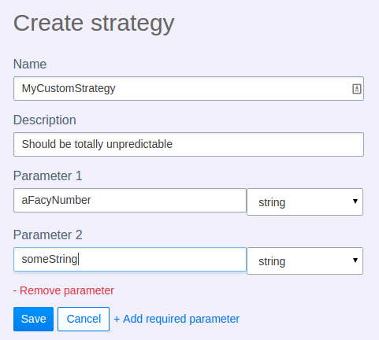

class: center, middle inverse .large.left[ # Unleash _open source feature toggles framework_ ] ??? Unleash - en open-source løsning for feature toggling --- class: background-img # Feature Toggles <img src="../images/Merrydown_Cider Factory.jpg"> .img-src[https://www.flickr.com/photos/howzey/3805038515] ??? Feature toggles - Lar oss integrere uferdig kode på master - Unngå brancher som lever i lang tid og blir dyre å integrere - Skille mellom **release** og **deploy** av funksjonalitet - Teste nye funksjoner i produksjon - **Økt kontroll:** - for hvem og når funksjon blir aktiv - Gradvis utrulling av ny funksjonalitet --- # Feature toggles - summary .large[ - Distinguish **release** and **deploy** of functionality - We decide _who_ (and when) a user gets a new feature - Test new features early in production - Gradual roll-out of new features - Lightning fast roll-back ] ??? - skille mellom **release** og **deploy** av funksjonalitet - feature toggles => økt kontroll på tilgang - Teste nye funksjoner tidlig i produksjon - Gradvis utrulling av nye funksjoner i produksjon - Rask tilbakerulling ved behov - feil eller negativ KPI --- class: middle, large ```java if(unleash.isEnabled("AwesomeFeature")) { //do some magic } else { //do old boring stuff } ``` --- # Minimal impact! .large[ - Use as few **```if statements```** as possible - Protect the **entry point** (the link) for new UI-components - _New API's_ does not need protection - (exisiting clients does not know them anyway!) ] ??? - Bruk så få ```if statements``` som mulig - Beskytt inngangen (lenke) til nye UI-komponenter - _Nye APIer trenger ikke beskyttelse_ - eksisterende klienter kjenner ikke til muligheten --- # Activation strategies .large[ Regler som bestemmer om en _feature toggle_ er aktiv - basic on/off - user - role / permission - date - servernode ** => Gradual rollout of new features** ] ??? - det morsomme med feature toggling - enkle regler som bestemmer om en funksjon regnes som aktiv - gir oss kontroll - for hvem og når en funksjon blir aktiv - gradivis utrulling av funksjoner --- # Unleash .large[ - Feature toggles as a µ-service developed by FINN - All our _feature toggles_ in the same tool - A shared and robust client - Unleash is _owned_ by UP-team in FINN - It's open source ] ??? - Laget av ildsjeler i FINN fordi vi hadde lyst - Enkelt å bruke toggles for alle - Laget så liten og konsis som mulig - Grundig design upfront for å sikre konsistent API - Open source - Koster selsvsagt litt ekstra - Gøy for oss som lager det - andre selskaper kan dra nytte av det vi gjør - andre selskaper kan bidra til en felles løsning - Schibsted Ready !! <br /><br /> .right[ ### https://github.com/finn-no/unleash ] ??? - Endte opp med å lage Unleash - Løser _feature toggles_ for FINN - UP eier Unleash i FINN --- # Unleash - System overview <img src="images/unleash_system.png" style="width: 100%;"> ??? Unleash består av tre komponenter: 1. Selve tjenesten - unleash-service - en slags mikrotjeneste 2. Unleash Admin - Grensesnittet for å legge til å endre feature toggles 3. Unleash-client(er) - Klienter-bibliotek for å fasilitere feature toggles i applikasjonene. --- # Unleash - Simple API ```GET: http://rest.finn.no/unleash/features``` ```json { features: [ { name: "App.AwesomeFeature", description: "Makes magic happen", enabled: false, strategy: "MyCustomStrategy", parameters: { aFacyNumber: "42", someString: "Test" } } ] } ``` --- # Unleash - The client - The robust client - Local in-memory representation - Local persisted last-known representation - Poll-based updates via REST (15s default) #### unleash-java-finn - wraps the open-source unleash-client, adding our FINN-stuff - Greenpages - FINN-specific strategy implementations - (in the future: metrics, monitoring) - Stash: https://git.finn.no/projects/MODS/repos/unleash-java-finn/ ??? - The robust, and kind of **fat**, client --- # How to get started _(you need the client jar on your classpath)_ ```java //create a new client Unleash unleash = new FinnUnleash(); ``` ```java //check whether a toggle is enabled unleash.isEnabled("talent.newAwesomeFeature"); ``` ```java //check toggle with trueish-fallback unleash.isEnabled("talent.unknwon", true); ``` .bottom.small[Stash: https://git.finn.no/projects/MODS/repos/unleash-java-finn/] --- # Unleash - Admin - Define new feature toggles - Enable / disable feature toggles - Choose and configure activation strategies - Define new strategies .right[ <img src="images/unleash_admin.png" style="width: 500px;border: 1px solid gray;"> http://rest.finn.no/unleash/ ] .bottom.small[] --- # Unleash: Custom strategy .red.strong[Step 1: Implement the custom strategy] ```java public interface Strategy { String getName(); boolean isEnabled(Map<String, String> parameters); } ``` --- # Unleash: Custom strategy .red.strong[Step 2: Define the strategy in Unleash Admin:]  --- # Unleash: Custom strategy .red.strong[Step 3: Register custom strategy when you create the unleash instance:] ```java Unleash unleash = new FinnUnleash(myCustomStrategy, customStrategy2); ``` --- # Unleash: Custom strategy .red.strong[Step 4: Use your activation strategy] --- # FINN-internal strategies **Implemented shared strategies in FINN** - Default - ActiveForUserWithId - GradualRolloutRandom **Possible strategies in the future:** - GradualRollout - ByDate - ByServerNode - .. .red[**We must develop the necessary stratgies together!**] ??? Strategier bør oppstå i konkrete prosjekter etter konkrete behov og testet lokalt. Når/hvis vi ser at flere i FINN kunne ha glede av en strategi bør disse commites tilbake til den delete finn-klienten. --- class: middle, center Name convention: ## ArtifactName.<span class="red">ToggleName</span> ??? Dersom vi følger en enkel navnekonvensjon får vi mange muligheter: - enklere å finne alle toggles tilhørende et system - sørger for at toggles ikke går over flere artifakter - gjør det mulig å implementere "filtrering" i tjenesten på sikt --- class: background-img # Clean up your own mess! <img src="../images/pollution.jpg"> .img-src[https://www.flickr.com/photos/epsos/5444678656/] ??? - Slett feature toggles når du er ferdig med den. - Kostbart å vedlikeholde over tid - Hver toggle gir en ny "vei" i applikasjonen din. - Så få permanente 'feature toggles' som mulig --- # Much more to come in the future - Authentication - Metrics - clientside - serverside - Traceability - More FINN-internal strategies - Server setup - One stable test - One stable prod - Clients for other languages - (e.g.: node) - Command line tool --- class: middle inverse # Mer info? ### HIPCHAT: .silver[unleash] ### EPOST: .silver[unleash@finn.no] ### Stash: .silver[https://git.finn.no/projects/MODS/repos/unleash-java-finn/] ### GITHUB: .silver[https://github.com/finn-no/unleash]